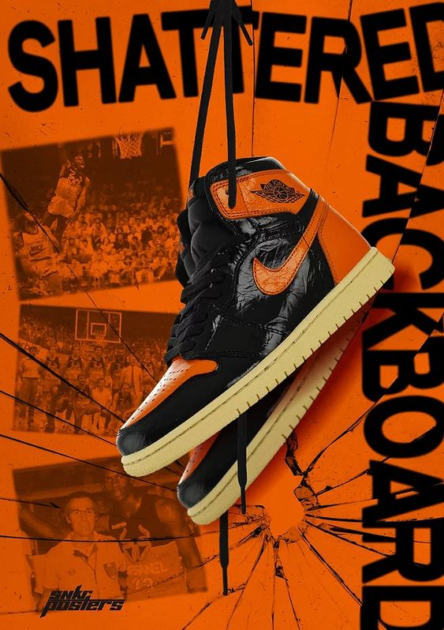

TRAVIS SCOTT x NIKE
Khi đèn tắt, Travis Scott trở nên sống động. Trong sự hợp tác mới nhất của mình với Jordan Brand, rager nổi tiếng của âm nhạc lấy cảm hứng từ Air Jordan VI cho một cái nhìn tỏa sáng nhất khi nó tối đen. Trên một đế phát sáng trong bóng tối, một lớp lót thiết kế phản chiếu đục lỗ bên dưới lớp da lộn ô liu lung linh và đánh cắp ánh đèn sân khấu khi máy ảnh nhấp nháy. Nhưng có một điều mà màn trập của máy ảnh không thể chụp được: bất cứ thứ gì bạn cất giấu bên trong túi nhỏ tiện dụng được đặt trên mắt cá chân.
Hoàn thành phiên bản đặc biệt AJ VI này, người sáng lập hãng thu âm và bản địa Houston để lại chữ ký của mình với thương hiệu "Cactus Jack" trên khóa ren và gót chân phải. Các điểm nhấn hồng ngoại, cùng với thương hiệu Nike Air mang tính biểu tượng ở gót chân trái, gật đầu với đường màu AJ VI ban đầu, mang lại cảm giác cổ điển cho thiết kế Thương hiệu Jordan mới nhất của Scott.
SUMMER VIBES

Nike Air và Nike Air Max sẽ là tâm điểm nặng nề cho thương hiệu trong năm nay, và cả hai loại sẽ tung ra vô số màu sắc mới của hình bóng cả cổ điển và hiện đại. Các dịch vụ phổ biến như The Air Max 90, Air Max 95 và Air Max 97 đã được làm lại bằng da tổng hợp và polyester tái chế trong khi Air Max Motif và Air Max Dawn đã được sửa đổi với ít nhất 20% polyester tái chế. Waffle One, Blazer và Dunk sẽ được chế tạo với hỗn hợp da tổng hợp tái chế, polyester tái chế và cao su Nike Grind. Gia nhập các cấp bậc này là tập hợp Sun Club mới của Swoosh, trong đó có Dunk Low, Air Force 1 Low, Blazer Low và Court Vision Low đều có màu sắc sống động và các cấu trúc của hàng dệt tái chế và da lộn tổng hợp.
Peep các sản phẩm trong phòng trưng bày ở đây ở trên và hy vọng chúng sẽ tung ra trong những tháng tới.